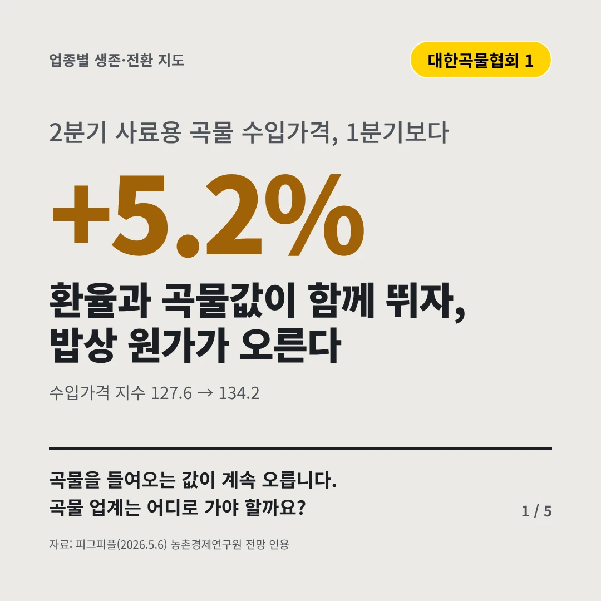
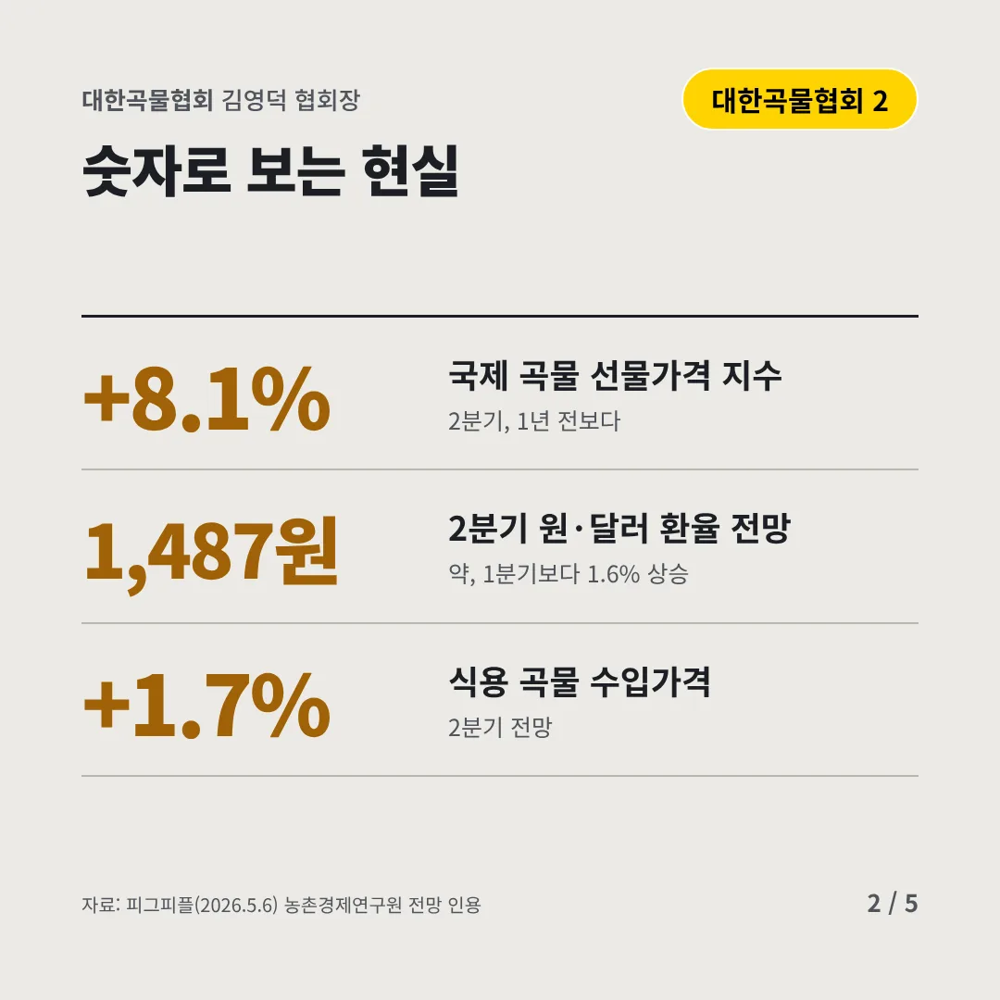
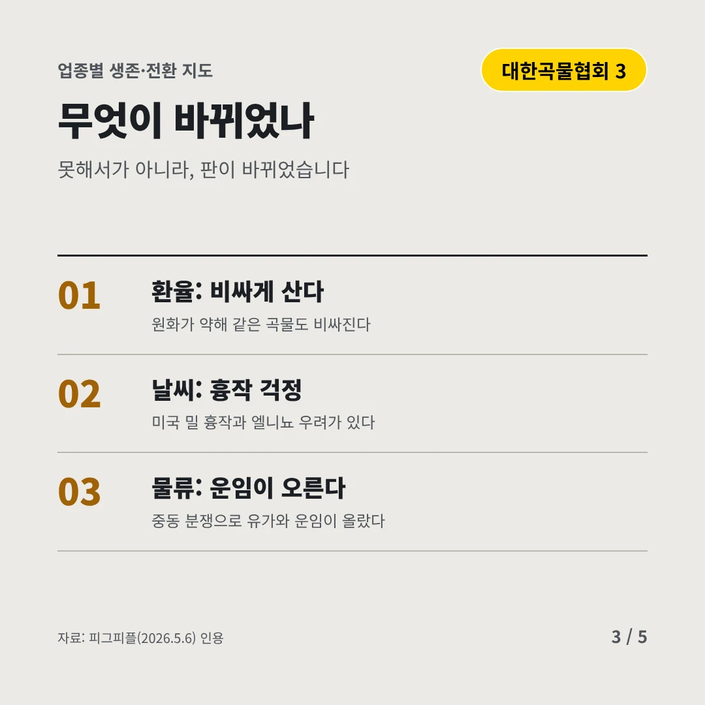
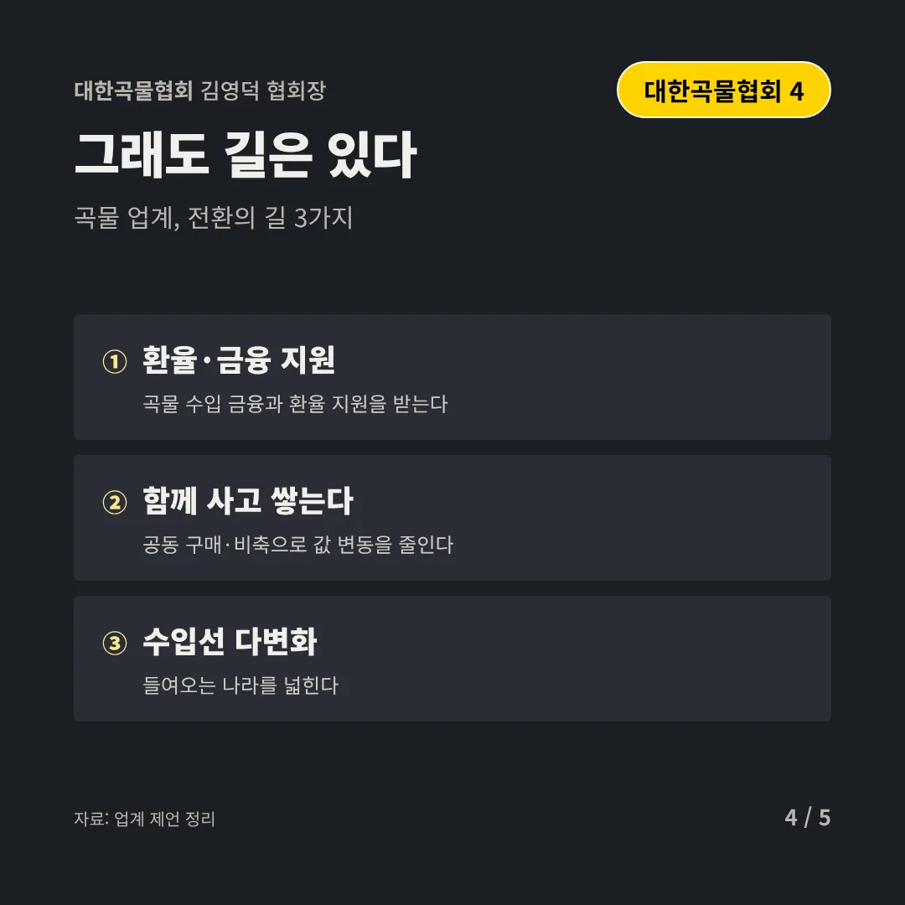
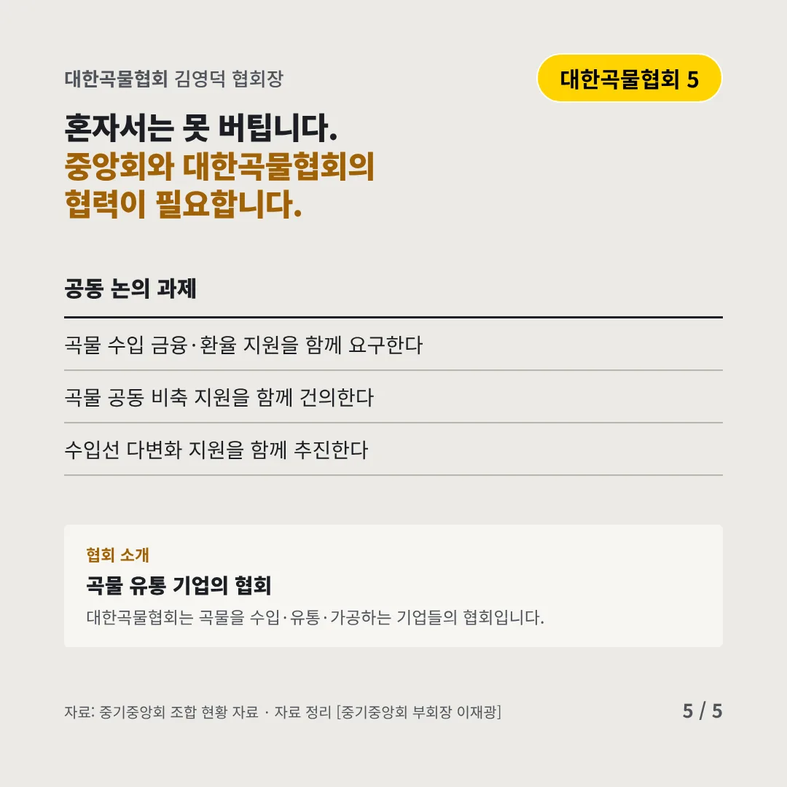
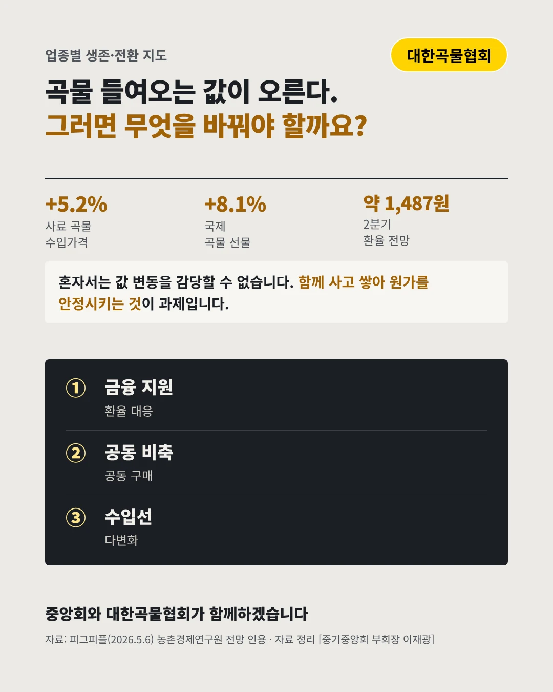

대한곡물협회
환율과 곡물값이 함께 뛰자, 밥상 원가가 오른다
+5.2% 2분기 사료용 곡물 수입가격, 1분기보다






곡물을 들여오는 값이 계속 오릅니다. 곡물 업계는 어디로 가야 할까요?
숫자로 보는 현실
- +8.1%국제 곡물 선물가격 지수2분기, 1년 전보다
- 1,487원2분기 원·달러 환율 전망약, 1분기보다 1.6% 상승
- +1.7%식용 곡물 수입가격2분기 전망
무엇이 바뀌었나
- 환율: 비싸게 산다원화가 약해 같은 곡물도 비싸진다
- 날씨: 흉작 걱정미국 밀 흉작과 엘니뇨 우려가 있다
- 물류: 운임이 오른다중동 분쟁으로 유가와 운임이 올랐다
그래도 길은 있다
- 환율·금융 지원곡물 수입 금융과 환율 지원을 받는다
- 함께 사고 쌓는다공동 구매·비축으로 값 변동을 줄인다
- 수입선 다변화들여오는 나라를 넓힌다
한 장 요약

협회 소개
대한곡물협회는 곡물을 수입·유통·가공하는 기업들의 협회입니다.
자료: 피그피플(2026.5.6)